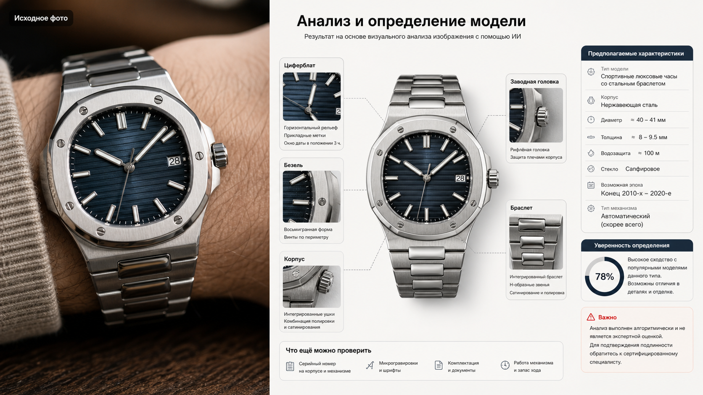

Промтзилла
Для часов важны мелкие детали: безель, стрелки, метки, форма корпуса, браслет и надписи на циферблате. Промт заставляет ИИ смотреть именно на них.

Пошаговая инструкция
- 1Сфотографируй часы крупно при мягком свете: циферблат, корпус, заднюю крышку, браслет и застёжку.
- 2Загрузи фото в инструмент определения модели часов по фото.
- 3Скопируй промт и попроси отделить вероятную модель от признаков подлинности.
- 4Добавь крупный кадр маркировок, если они есть.
- 5Для покупки или оценки обязательно сверяй результат с часовым мастером или официальным каталогом.
Пример результата
На обложке показан типичный сценарий: слева обычное исходное фото, справа результат, который можно получить после анализа через инструмент определения модели часов по фото.
Промт
RU
Определи часы на фото и сделай аккуратный разбор. Укажи: — вероятный бренд; — вероятную линейку или модель; — возможный референс, если признаков достаточно; — тип механизма: кварц, механика, автоматический, если можно предположить; — примерный период выпуска; — материал корпуса и браслета; — уровень уверенности; — признаки: циферблат, метки, стрелки, дата, безель, заводная головка, форма корпуса, браслет, маркировки; — похожие модели и отличия; — какие фото нужны для проверки: задняя крышка, механизм, серийный номер, застёжка. Не подтверждай подлинность по фото. Если видны признаки реплики или стилизации, напиши осторожно и объясни почему.
EN
Identify the wristwatch in the photo and provide a careful analysis. Include: — probable brand; — probable line or model; — possible reference number if there are enough clues; — movement type: quartz, mechanical, automatic, if it can be inferred; — approximate production period; — case and bracelet material; — confidence level; — clues: dial, markers, hands, date window, bezel, crown, case shape, bracelet, markings; — similar models and differences; — what photos are needed for verification: caseback, movement, serial number, clasp. Do not authenticate the watch from a photo. If there are signs of a replica or stylization, state this carefully and explain why.
Важно
ИИ не подтверждает подлинность часов и не заменяет экспертизу. Для покупки, продажи и оценки нужны документы, серийные номера и очный осмотр.
Теги